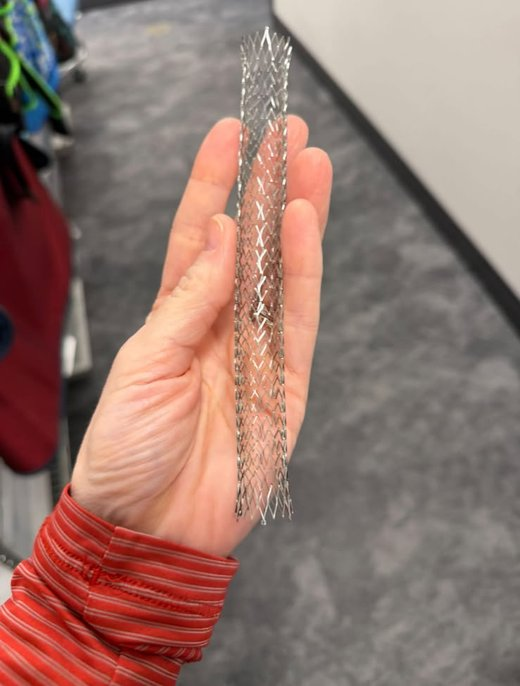

Andrii Mikhalov, wywiad lekarski
Andrii Mikhalov, wywiad lekarski
Podsumowanie
Rocznik 1972, obwód odeski, Ukraina. Zespół May-Thurnera (NIVL, Cockett): ucisk żyły biodrowej, prośba o stentowanie pod IVUS (NIVL), ucisk lewej żyły biodrowej, ICD-10 I87.1, CEAP C4. Przewlekły żylny ból lewej nogi i przewlekły ból miednicy.
Wydolność: po około 30 minutach pracy muszę leżeć około 2 dni; po 2-3 godzinach, około tygodnia. Szczegóły: Objawy i dolegliwości.
Od młodości nie jestem w stanie pracować długo ani dużo; teraz to ograniczenie jest najsilniejsze. Z powodu bólu od lat jestem zmuszony powstrzymywać się od intymności. Całe życie marzyłem o rodzinie i dzieciach, a leczenie jest moją szansą na to. Na przykład w International Rescue Committee, najciekawszej dla mnie międzynarodowej pracy w języku angielskim, poproszono mnie o zwolnienie pokoju socjalnego kierowców na czas spotkań. Napisałem do przełożonego, że z powodu choroby żylnej nie mam siły długo stać na nogach na korytarzu, czekając na koniec spotkania. Tę pracę straciłem z powodu choroby żylnej i niemożności długiego stania. Poza tym ta praca mi odpowiadała: potrafię prowadzić samochód, porozumiewać się po angielsku i bez problemu poznać wszystkie zasady. Ostatnią pracę w firmie zaopatrującej statki (ship chandler) zostawiłem z powodu zaostrzenia tej choroby, choć miałem perspektywę zostania zastępcą założyciela firmy we wszystkich obszarach i faktycznie już pracowałem w biurze. Wtedy zaczęły mnie też boleć kolana, ale zaproszono mnie do pracy w biurze, a tam kolana nie przeszkadzały; praca przy komputerze była niemożliwa z powodu zastoju żylnego.
Rozpoznanie potwierdzone instrumentalnie (MRI z kontrastem) i odnotowane przez chirurga naczyniowego w 2026 roku. Stentowanie lewej żyły biodrowej jest zalecone i zaplanowane. Stentowanie i hospitalizacja nie zostały jeszcze wykonane z przyczyn niezwiązanych z medycyną. (wpis chirurga naczyniowego, transkrypcja i tłumaczenie) Plan leczenia w krajowym systemie ochrony zdrowia (eHealth) nr 7530-0736-7274-7824 z 2026 roku; e-skierowanie nr 1733-4270-3364-4529 z 2026 roku na konsultację chirurga naczyniowego.
Wymóg: stentowanie pod kontrolą IVUS, wykonane przez chirurga z praktycznym doświadczeniem w żylnym IVUS. Na moje zapytania (klinika Feofania, Odeski Narodowy Uniwersytet Medyczny, NAMN, NFZ Ukrainy, Ministerstwo Zdrowia, 2026) żaden ośrodek na Ukrainie nie potwierdził, że wykonuje stentowanie żyły biodrowej pod kontrolą IVUS. Odpowiedzi są zebrane w Listy i Uchwała 1079.
Drugie ustalenie: jatrogenne pseudo-zwężenie żyły biodrowej po operacji Ivanissevicha z 1997 roku, opisane przez urologa, profesora. Leży na poziomie blizny, poniżej ucisku May-Thurnera. Do zmierzenia obu potrzebny jest IVUS.
O co proszę
Proszę o klinikę, która przyjmie mnie na leczenie, lub o napisanie wniosku o leczenie za granicą na podstawie Uchwały nr 1079. Szczegóły: O co proszę.
Druga sprawa: nos i zatoki
Nos: tomografia komputerowa zatok przynosowych z 2024 roku wykazuje cechy przewlekłego zapalenia zatoki szczękowej lewej. Konsultacja laryngologa z 2024 roku: przewlekłe zapalenie lewej zatoki szczękowej, zalecona planowa endoskopowa lewostronna maksylotomia (rewizja). Nie wykonano z przyczyn niezwiązanych z medycyną. Szczegóły i dokumenty: Nos i zatoki.
Wszystkie dokumenty są na tej stronie: zob. Chronologia, Rozpoznanie, Objawy, Badania i obrazowaniei Dokumenty (skany i obrazy DICOM).
Wszystkie strony serwisu
Te same strony są dostępne przez przycisk „Menu” na górze.
- Podsumowanie
- O co proszę
- Chronologia
- Rozpoznanie
- Objawy i dolegliwości
- Badania i obrazowanie
- Nos i zatoki
- Dokumenty
- Uchwała 1079
- Listy
- Kontakt
Strony z dokumentami:
- 1999: wypis ze szpitala, oddział urologii
- 2007: Instytut Szalimowa, wypis ze szpitala i opis radiologa
- Notatka z konsultacji urologa
- 2011: wypis ze szpitala po operacji żylaków powrózka nasiennego nr 5800, oddział urologii
- 2011: zaświadczenie traumatologiczne, złamanie prawej kości piętowej
- 2024: wypis ze szpitala, Szpital Miejski nr 11, prawe kolano
- 2024: USG prawego stawu kolanowego
- 2024: MRI odcinka lędźwiowego kręgosłupa
- 2026: wpis chirurga naczyniowego, zespół May-Thurnera, zalecone stentowanie